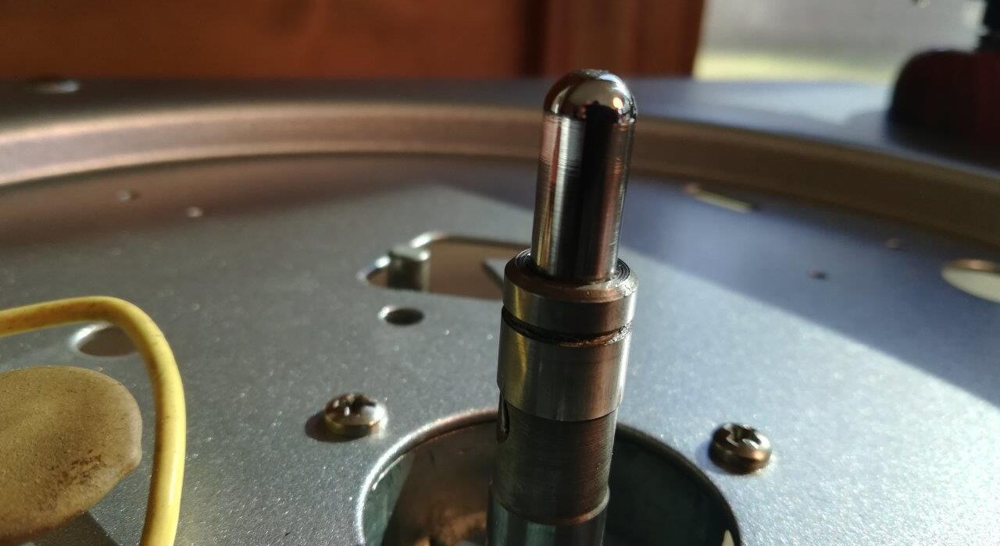
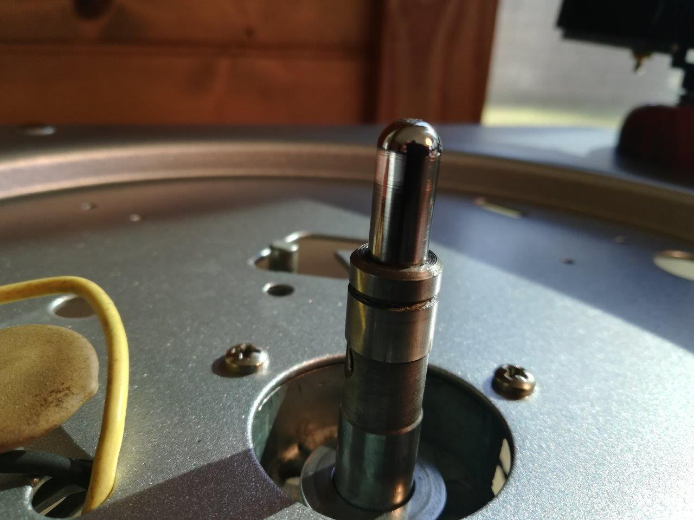

The center bearing on the Magnavox Micromatic is one of the main sources of noise (rumble) so I wanted to ensure that it was in the best possible shape.
The bearing is of an inverted design, with a center post, or “spigot,” sticking up through the platter. Screwed to the platter is a boss which holds a 7/16” bronze sleeve bearing (appears to be of the oilite type). The boss rides on a ball bearing with a polished thrust washer on either side. Between the platter-boss and the upper thrust washer is a rubber washer to decouple an reduce noise. Below the bottom thrust washer is a specially designed washer with dimples on either side.
The ball bearing measures 0.440” ID, 0.797” OD. I am sure it is nominally 7/16”.
The leftmost washer in the photo above is the patented dimpled washer designed to reduce wow. You can read the patent here:
Even though the original bearing was in decent shape, I suspected there was some improvement to be had over a 60 year-old bearing which had sat in one position for the last 50. So I went searching for 7/16” thrust bearings. I found a 7/16” nylon cage thrust bearing with approximately the same dimensions. I thought to myself that a nylon cage is bound to be quieter than the original brass; that does not seem to be the case. In addition, the washers which came with the nylon bearing are larger ( OD) and I believe more likely to contact the platter-boss, transmitting noise. However, they are available, which is good to know. Perhaps using the original thrust washers with this bearing would help.
There is another option for the center bearing at the time of writing. An eBay seller is offering a ball bearing of much the same style, with races in the thrust washers. He claims quieter operation than the original, which I believe because the more numerous balls in the bearing and the bearing races should distribute pressure more evenly. Theory aside, it works perfectly and does seem to be quieter than the 60 year-old original. Here is a YouTube video from the seller, demonstrating:
The rubber washer is vital in decoupling the platter from the rest of the deck, and I recommend replacing it if it is squished flat or hardened. I was not able to find a washer the right size, but cut one from a larger rubber gasket which I found in the plumbing section of the local hardware store.
Because the Micromatic was a changer, the record drop mechanism passed through a hole in the center of the spigot. Having removed that, I used a 7.2mm hardened drill rod (sanded down, slightly) to make a manual turntable spindle, then drove it tightly down into the spigot.

Tags: bearing, Magnavox, Turntable